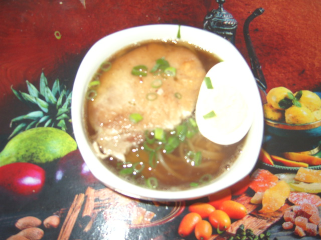

Last year (2015), I played an RPG for Playstation 2 called Persona 3 FES. The plot is set in Japan and the game shows various aspects of Japanese culture. Among often featured events are scenes where the characters go out to eat ramen (a noodle-based dish that is very popular in Japan) and takoyaki (roasted octopus dumpling).
Well... I have to admit that, despite being of Japanese descent, I had never eaten either ramen or takoyaki. The noodles-based dish I've known from my childhood is just udon (simple noodles) cooked in water with shoyu (soy sauce). The only thing with "ramen" in the name I had ever eaten was the instant noodles from Nissin Foods labeled as "instant ramen", but I guess this doesn't really count :P . I've always heard a lot about both ramen and takoyaki, but had never stopped to think about them. Only after playing Persona 3 I actually realized I had never eaten either of them! ... Yes, weird, but it's true.
A few months ago, my mother and I came across a ramen-ya (or ramen shop, a restaurant specializing in ramen) and decided to enter. We ordered the cheapest option, just to get a sense of what ramen tasted like. We got a large bowl of broth with noodles and seaweed flakes inside, and three very thin pork slices and a half boiled egg on top. Was it good? Yes, it was, but... not as much as I thought it should be. The taste didn't go much beyond the good ol' udon in shoyu, and left that impression that something wasn't quite right... I don't know if the people running the place are Japanese (the staff at least wasn't) and I don't know how close it gets to a ramen shop from Japan, but their food left much to be desired in my opinion. Even though we had ordered the simplest option, and even though I don't know how true ramen should taste like, I believe the acclaimed ramen is supposed to be something unique, on a different level, and not possible to simply be compared to udon hastily cooked in shoyu. After this frustration, I decided to leave the curiosity about ramen aside for the moment. Maybe another day, at a better restaurant ...
Forward to end of March 2016. I was writing a fan fiction about the aforementioned Persona 3. It was a scene featuring a Japanese food, and I decided to research about it to reduce the chances of writing wrong information. This research took me to a site with Japanese food recipes and, by chance, I stumbled upon their ramen recipe. Then, something unexpected happened. I don't know what got into me, and I had the crazy idea of trying to make ramen...
I found a problem right away. The recipe was in English, and, to my surprise, I found that cooking vocabulary was quite different from the "normal" vocabulary I was used to. Literal translations of verbs and ingredient names often make no sense in Portuguese (my native language), and I had to consult sites with Portuguese to English translations of cooking terms. Once I was able to decypher the terms, I could understand the recipe reasonably. It actually didn't seem that complicated, and yet I had the impression that it had the potential to turn out better than the ramen from that restaurant!
I'm not much into cooking (my lack of will to cook, as well as my lack of ability in the kitchen partly because of my vision impairment, are some of my greatest worries), but since that crazy idea managed to get me motivated, I figured I'd try to take advantage of the situation. Who knows? Maybe if I get incentives to practice, I might end up learning to like cooking, or at least come to not dislike it so much...
I can cut the ingredients (like vegetables) reasonably well, although it takes more time than it normally should. The biggest problem is to tame the beast called stove. Without the ability to see, I still don't know how to tell when things have cooked enough, for example. For now, my mother is helping me with the stove.
Fortunately, everything went fine as we followed the recipe, and our ramen got ready! Below is a picture of it:

The difference from the recipe was that I didn't use the "angel hair pasta in baking soda" workaround that was meant to substitute for the Japanese noodles (I used fresh ramen noodles from our local Japanese grocery store ). Also, I didn't put moyashi (bean sprouts) on the topping because I don't like it much.
In the end, fortunately the ramen was to our liking. It was a bit of work but I think it was worth it. And yes, it turned out better than the one from the restaurant! I still don't know how real ramen is supposed to taste like, but according to visitors' comments on the recipe's page, some said the results reminded them of the ramen they had had in Japan. So, I'll consider this as a reasonable approximation.
Alright. The ramen's done. Now, I need the takoyaki...